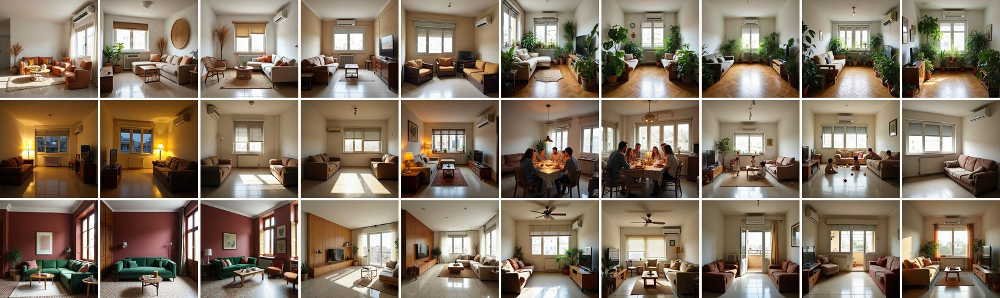

חמים
Warm (Corpus: The Client Said)
Hallucination, 2026 · 2 × 30 images
Hallucination, 2026 · 2 × 30 images


בקתה צפון־אירופאית: תקרת עץ, ספה בז', אח בוערת בחצי מהתמונות, יער מאחורי החלון. אף אדם.
מאוורר תקרה, אריחים ותריס, וגם רדיאטור, ב־19 מתוך 30 תמונות, למרות שבדירות ישראליות כמעט אין כאלה. ההטיה האירופאית נשארת גם כשמתארים לה את הדירה.

הערת שיטה. בניסוי הראשון כתבתי רק את המילה "ישראלי". המכונה החזירה את אותה בקתה עם אח, ו"דירה ישראלית ישנה" יצאה עם רדיאטורים ותמונה של מלאך נוצרי. רק תיאור פיזי של הדירה הזיז אותה.
סטי האימון

